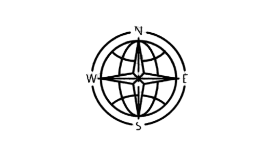
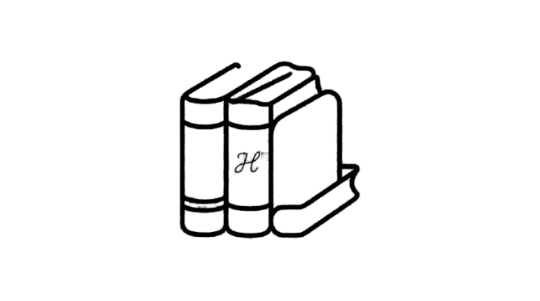
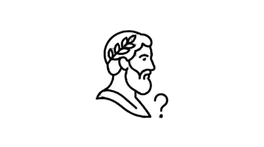

Seja Bem-Vindo à Página de Disciplinas!
Aqui você conseguirá acessar os portais das outras matérias!
Conheça mais sobre as máterias de sociologia e geografia:
Clique aqui para ir para o portal!
Conheça mais sobre as máterias de física e história:
Clique aqui para ir para o portal!
Conheça mais sobre as máterias de português e filosofia:
Clique aqui para ir para o portal!